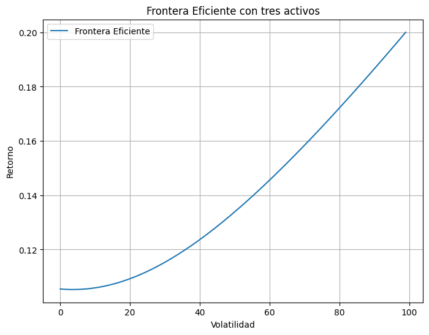
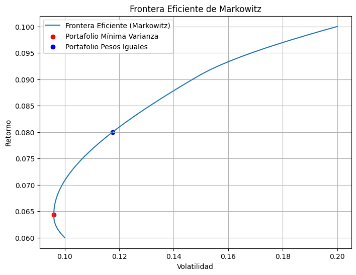
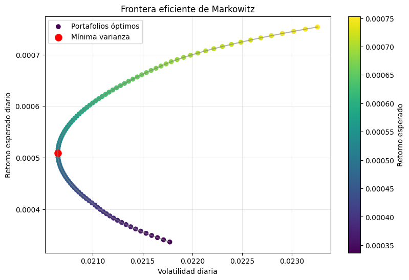

3. Construcción de una frontera eficiente#
En este modulo, veremos como construir una frontera de portafolios eficientes que permiten al inversionista obtener la maxima rentabilidad, con el mínimo riesgo.
Descarga las diapositivas Descargar: Teoría de MArkowitz
Definición intuitiva#
Supongamos un portafolio que contendrá 3 activos A, B C, con varianzas y covarainzas dadas a continuación:
[1]:
# Definimos varianzas y covarianzas de ejemplo para los tres activos
var_A = 0.04 # Varianza del activo A
var_B = 0.0225 # Varianza del activo B
var_C = 0.01 # Varianza del activo C
cov_AB = 0.012 # Covarianza entre A y B
cov_AC = 0.008 # Covarianza entre A y C
cov_BC = 0.006 # Covarianza entre B y C
Contruyamos una frontera eficiente con los tres activos, variando los pesos entre 0 y 1, de forma manual y graficarla
[2]:
import matplotlib.pyplot as plt
import numpy as np
# definimos los pesos de los activos
pesos = np.linspace(0, 1, 100)
volatilidades = []
# calculamos la volatilidad del portafolio para cada combinación de pesos
for peso_A in pesos:
peso_B = (1 - peso_A) / 2 # suponemos que peso_C = 1 - peso_A - peso_B
if peso_B < 0:
continue
peso_C = 1 - peso_A - peso_B
if peso_C < 0:
continue
var_portafolio = (peso_A ** 2) * var_A + (peso_B ** 2) * var_B + (peso_C ** 2) * var_C
var_portafolio += 2 * peso_A * peso_B * cov_AB + 2 * peso_A * peso_C * cov_AC + 2 * peso_B * peso_C * cov_BC
vol_portafolio = var_portafolio ** 0.5
volatilidades.append(vol_portafolio)
# graficamos la frontera eficiente
plt.figure(figsize=(8,6))
plt.plot(volatilidades, label='Frontera Eficiente')
plt.xlabel('Volatilidad')
plt.ylabel('Retorno')
plt.title('Frontera Eficiente con tres activos')
plt.legend()
plt.grid(True)
plt.show()

La curva ilustra las combinaciones óptimas que ofrecen el mayor retorno posible para cada nivel de riesgo.
El portafolio de mínima varianza (punto más a la izquierda) es el que tiene el menor riesgo posible.
Los portafolios hacia la derecha y arriba implican mayor riesgo y mayor retorno.
El portafolio con pesos iguales se muestra como referencia y generalmente no es el más eficiente.
Sin embargo estos portafolios no son los mínimos optimizados para las condiciones del inversionista
Calculemos el Óptimo#
Vamos a minimizar el riesgo de la cartera para los posibles retornos esperados que queremos para un inversionista.
El método de solución por medio de Sequential Least Squares Programming (SLSQP de scipy) que utiliza langrange dentro de sus problemas cuadráticos.
[3]:
# Cálculo de los pesos óptimos que minimizan la volatilidad del portafolio
from scipy.optimize import minimize
# Supongamos retornos esperados de ejemplo para los activos
retornos_esperados = np.array([0.10, 0.08, 0.06])
# Matriz de covarianza
cov_matrix = np.array([
[var_A, cov_AB, cov_AC],
[cov_AB, var_B, cov_BC],
[cov_AC, cov_BC, var_C]
])
def volatilidad_portafolio(pesos, cov_matrix):
return np.sqrt(np.dot(pesos.T, np.dot(cov_matrix, pesos)))
# Restricción: suma de pesos = 1
restriccion = {'type': 'eq', 'fun': lambda x: np.sum(x) - 1}
# Límites: cada peso entre 0 y 1
limites = tuple((0, 1) for _ in range(3))
# Pesos iniciales
pesos_inicial = np.array([1/3, 1/3, 1/3])
resultado = minimize(volatilidad_portafolio, pesos_inicial, args=(cov_matrix,),
method='SLSQP', bounds=limites, constraints=restriccion)
pesos_optimos = resultado.x
vol_optima = volatilidad_portafolio(pesos_optimos, cov_matrix)
print('Pesos óptimos (minimizan volatilidad):', pesos_optimos)
print('Volatilidad mínima:', vol_optima)
# Comparación con un portafolio sin optimizar (pesos iguales)
pesos_iguales = np.array([1/3, 1/3, 1/3])
vol_igual = volatilidad_portafolio(pesos_iguales, cov_matrix)
print('Volatilidad con pesos iguales:', vol_igual)
Pesos óptimos (minimizan volatilidad): [0.01359653 0.18971858 0.79668489]
Volatilidad mínima: 0.09598584407613732
Volatilidad con pesos iguales: 0.11761519176251566
[4]:
# Frontera eficiente con optimización de Markowitz
num_puntos = 50
retornos_objetivo = np.linspace(retornos_esperados.min(), retornos_esperados.max(), num_puntos)
vols_efficient = []
pesos_efficient = []
for r_obj in retornos_objetivo:
restricciones = (
{'type': 'eq', 'fun': lambda x: np.sum(x) - 1}, # suma de pesos = 1
{'type': 'eq', 'fun': lambda x: np.dot(x, retornos_esperados) - r_obj} # retorno objetivo
)
resultado = minimize(volatilidad_portafolio, pesos_inicial, args=(cov_matrix,),
method='SLSQP', bounds=limites, constraints=restricciones)
if resultado.success:
vols_efficient.append(resultado.fun)
pesos_efficient.append(resultado.x)
else:
vols_efficient.append(np.nan)
pesos_efficient.append([np.nan, np.nan, np.nan])
# Graficar la frontera eficiente optimizada
plt.figure(figsize=(8,6))
plt.plot(vols_efficient, retornos_objetivo, label='Frontera Eficiente (Markowitz)')
plt.scatter(vol_optima, np.dot(pesos_optimos, retornos_esperados), color='red', label='Portafolio Mínima Varianza')
plt.scatter(vol_igual, np.dot(pesos_iguales, retornos_esperados), color='blue', label='Portafolio Pesos Iguales')
plt.xlabel('Volatilidad')
plt.ylabel('Retorno')
plt.title('Frontera Eficiente de Markowitz')
plt.legend()
plt.grid(True)
plt.show()

Construyamos una frontera eficiciente con datos reales:#
Utilizando los datos de Apple, Microsoft y Google construiremos la frontera eficiente para los tres activos.
[5]:
# Descargar datos históricos de precios de tres activos: Apple, Microsoft y Google
import yfinance as yf
tickers = ['AAPL', 'MSFT', 'GOOGL']
datos = yf.download(tickers, start='2020-01-01', end='2023-01-01')
print(datos.head())
[*********************100%***********************] 3 of 3 completed
Price Close High \
Ticker AAPL GOOGL MSFT AAPL GOOGL
Date
2020-01-02 72.400520 67.920815 152.158386 72.460784 67.920815
2020-01-03 71.696632 67.565498 150.263763 72.455950 68.172416
2020-01-06 72.267921 69.366379 150.652130 72.306491 69.391685
2020-01-07 71.928047 69.232407 149.278580 72.533087 69.648763
2020-01-08 73.085114 69.725174 151.656342 73.386431 70.063120
Price Low Open \
Ticker MSFT AAPL GOOGL MSFT AAPL
Date
2020-01-02 152.262592 71.156682 66.819638 149.989032 71.409785
2020-01-03 151.523700 71.472454 66.860824 149.733267 71.629138
2020-01-06 150.718449 70.568495 67.043431 148.264882 70.819193
2020-01-07 151.258474 71.708687 69.056240 149.032282 72.277571
2020-01-08 152.328945 71.631559 69.109328 149.629079 71.631559
Price Volume
Ticker GOOGL MSFT AAPL GOOGL MSFT
Date
2020-01-02 66.914918 150.415323 135480400 27278000 22622100
2020-01-03 66.894573 149.979579 146322800 23408000 21116200
2020-01-06 67.074689 148.804861 118387200 46768000 20813700
2020-01-07 69.497902 150.926921 108872000 34330000 21634100
2020-01-08 69.218004 150.557448 132079200 35314000 27746500
[6]:
# Extraer precios de cierre y calcular retornos logarítmicos
if ('Close' in datos.columns):
precios = datos['Close']
else:
# Si los datos tienen MultiIndex en columnas (por ticker y tipo de precio)
precios = datos.xs('Close', level=1, axis=1)
# Calcular retornos logarítmicos
daily_log_returns = np.log(precios / precios.shift(1))
daily_log_returns.dropna(inplace=True) # Eliminar filas con NaN resultantes del cálculo de retornos
daily_log_returns.head()
[6]:
| Ticker | AAPL | GOOGL | MSFT |
|---|---|---|---|
| Date | |||
| 2020-01-03 | -0.009770 | -0.005245 | -0.012530 |
| 2020-01-06 | 0.007937 | 0.026305 | 0.002581 |
| 2020-01-07 | -0.004714 | -0.001933 | -0.009159 |
| 2020-01-08 | 0.015958 | 0.007092 | 0.015803 |
| 2020-01-09 | 0.021018 | 0.010443 | 0.012415 |
[7]:
# Cálculo de la matriz de covarianza
matriz_covarianza = daily_log_returns.cov()
print("Matriz de Covarianza:")
print(matriz_covarianza)
Matriz de Covarianza:
Ticker AAPL GOOGL MSFT
Ticker
AAPL 0.000541 0.000372 0.000415
GOOGL 0.000372 0.000474 0.000397
MSFT 0.000415 0.000397 0.000481
[8]:
# calculo de la volatiliad del portafolio con pesos iguales
pesos_iguales = np.array([1/3, 1/3, 1/3])
vol_igual = np.sqrt(np.dot(pesos_iguales.T, np.dot(matriz_covarianza, pesos_iguales)))
print('Volatilidad con pesos iguales:', vol_igual)
Volatilidad con pesos iguales: 0.020720149675098373
[9]:
# Calcular los pesos óptimos que minimizan la volatilidad del portafolio usando la matriz de covarianza real
from scipy.optimize import minimize
# Usar los retornos medios diarios como retornos esperados
retornos_esperados = daily_log_returns.mean().values
cov_matrix = matriz_covarianza.values
num_activos = len(retornos_esperados)
# Función objetivo: volatilidad del portafolio
def volatilidad_portafolio(pesos, cov_matrix):
return np.sqrt(np.dot(pesos.T, np.dot(cov_matrix, pesos)))
# Restricción: suma de pesos = 1
restriccion = {'type': 'eq', 'fun': lambda x: np.sum(x) - 1}
# Límites: cada peso entre 0 y 1
limites = tuple((0, 1) for _ in range(num_activos))
# Pesos iniciales
pesos_inicial = np.array([1/num_activos]*num_activos)
resultado = minimize(volatilidad_portafolio, pesos_inicial, args=(cov_matrix,),
method='SLSQP', bounds=limites, constraints=restriccion)
pesos_optimos = resultado.x
vol_optima = volatilidad_portafolio(pesos_optimos, cov_matrix)
print('Pesos óptimos (minimizan volatilidad):', pesos_optimos)
print('Volatilidad mínima:', vol_optima)
Pesos óptimos (minimizan volatilidad): [0.33333333 0.33333333 0.33333333]
Volatilidad mínima: 0.020720149675098373
[10]:
# Frontera eficiente de Markowitz (todos los portafolios óptimos) con datos reales
retornos_objetivo_real = np.linspace(retornos_esperados.min(), retornos_esperados.max(), 100)
vols_markowitz, rets_markowitz, pesos_markowitz = [], [], []
for r_obj in retornos_objetivo_real:
restricciones = (
{'type': 'eq', 'fun': lambda x: np.sum(x) - 1},
{'type': 'eq', 'fun': lambda x, r=r_obj: np.dot(x, retornos_esperados) - r}
)
resultado = minimize(
volatilidad_portafolio,
pesos_inicial,
args=(cov_matrix,),
method='SLSQP',
bounds=limites,
constraints=restricciones
)
if resultado.success:
vols_markowitz.append(resultado.fun)
rets_markowitz.append(np.dot(resultado.x, retornos_esperados))
pesos_markowitz.append(resultado.x)
vols_markowitz = np.array(vols_markowitz)
rets_markowitz = np.array(rets_markowitz)
plt.figure(figsize=(9, 6))
plt.plot(vols_markowitz, rets_markowitz, color='gray', alpha=0.6)
sc = plt.scatter(vols_markowitz, rets_markowitz, c=rets_markowitz, cmap='viridis', s=35, label='Portafolios óptimos')
idx_min = np.argmin(vols_markowitz)
plt.scatter(vols_markowitz[idx_min], rets_markowitz[idx_min], color='red', s=90, label='Mínima varianza')
plt.xlabel('Volatilidad diaria')
plt.ylabel('Retorno esperado diario')
plt.title('Frontera eficiente de Markowitz')
plt.grid(True, alpha=0.3)
plt.legend()
plt.colorbar(sc, label='Retorno esperado')
plt.show()

[11]:
# Método de Lagrange para encontrar los pesos óptimos para un retorno objetivo
import numpy as np
import pandas as pd
# Retorno objetivo aleatorio dentro del rango de retornos observados
retorno_objetivo = np.random.uniform(retornos_esperados.min(), retornos_esperados.max())
print(f"Retorno objetivo seleccionado: {retorno_objetivo:.6f}")
# Construcción de matrices para el sistema de ecuaciones de Lagrange
ones = np.ones(num_activos)
A = np.block([
[2*cov_matrix, retornos_esperados.reshape(-1,1), ones.reshape(-1,1)],
[retornos_esperados, 0, 0],
[ones, 0, 0]
])
b = np.concatenate([np.zeros(num_activos), [retorno_objetivo, 1]])
# Resolver el sistema
solucion = np.linalg.solve(A, b)
pesos_lagrange = solucion[:num_activos]
print('Pesos óptimos (Lagrange):', pesos_lagrange)
print('Suma de pesos:', np.sum(pesos_lagrange))
print('Retorno esperado del portafolio:', np.dot(pesos_lagrange, retornos_esperados))
print('Volatilidad del portafolio:', np.sqrt(np.dot(pesos_lagrange.T, np.dot(cov_matrix, pesos_lagrange))) )
Retorno objetivo seleccionado: 0.000741
Pesos óptimos (Lagrange): [ 0.71845086 -0.16948052 0.45102966]
Suma de pesos: 1.0
Retorno esperado del portafolio: 0.0007406157140195243
Volatilidad del portafolio: 0.022542737818928793
Ejercicio de Clase:#
Con las acciones que se identificaron en el ejercicio anterior 2.1_Princios_de_portafolios
Descrgue la librería PyportfolioOpt de python «Documentación:Librería»
COn esa librería optimice el portafolio y halle los pesos de mínima varaianza.